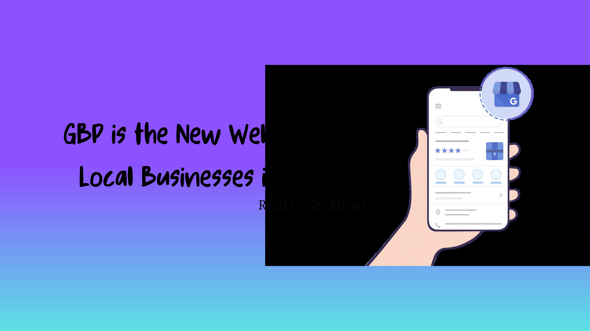

Do you recall the time when every business’s top priority was to have a website? Well, things have changed.
In 2025, your Google Business Profile (GBP) isn't just a nice-to-have anymore,it's becoming the digital storefront that matters most for local businesses.
If you're a small business owner wondering whether to invest thousands in a fancy website or optimize your Google Business Profile, this article will open your eyes to a reality that's already here.

The Numbers Don't Lie: Google is Where Your Customers Are
Let’s start this article with a reality check, 87% of customers use Google to locate nearby businesses , and this number keeps climbing. Think about your own behavior. How often have you searched for a restaurant, salon, or plumber without first opening Google?
Here’s what makes this even more powerful, customers are more likely to trust the businesses with a complete business profile and appear in the local pack of Google Maps and Search. That’s not just visibility; that’s instant credibility.
But wait, there’s more. Verified businesses receive over 20,000–25,000 views annually in Google searches. Now, consider that level of visibility without investing a single rupee in advertising, that’s the power of a well-optimized Google Business Profile.
Why GBP is Outperforming Traditional Websites
1. People Find You Without Trying
Your website sits somewhere on the internet hoping people will discover it. Your Google Business Profile? It
appears right when someone in your area searches for what you offer. It's the difference between waiting for
customers and meeting them exactly where they're looking.
When someone searches "best cafe near me" or "emergency dentist in Chennai," Google doesn't show them
websites first, it shows them the Local Pack with Google Business Profiles. You either show up there, or you
might as well be invisible.
2. Mobile-First is Mobile-Only Now
In 2025, 71% of Google Business Profile interactions originate from mobile devices. People aren't sitting at
desktops browsing anymore. They're on their phones, looking for quick answers, directions, and
contact information.
Your Google Business Profile (GBP) gives customers everything they need in seconds:
- One-tap calling to reach you instantly
- Instant directions powered by Google Maps
- Business hours displayed at a glance
- Authentic photos and latest updates from your business
- Complete list of services offered
- Genuine reviews from real customers
No scrolling through website menus. No "Contact Us" forms. Just immediate action.
3. Trust is Built Before They Visit Your Website
Here's something fascinating: 61% of all users who click on a Google business listing will then click on the website link from the listing. Notice the sequence? They discover you on Google Business Profile first, build trust there, and then visit your website for further details.
Your Google Business Profile (GBP) gives customers everything they need in seconds — no clicks, no waiting, just instant access:
-
Real Customer Reviews
Unlike your website where testimonials can feel handpicked, Google reviews are unfiltered and authentic. Customers see both the good and bad, which paradoxically builds more trust. When they see you responding professionally to negative reviews, that's instant credibility.
-
Visual Proof from Real Customers
User-uploaded photos show what your business actually looks like, not just the polished marketing shots. Customers see the real menu items, the actual store interior, the genuine atmosphere. This transparency breeds trust.
-
Response Time Signals
Your responsiveness speaks louder than your design. When people see you replying to reviews, questions, and messages on your Google Business Profile, they immediately know this business actually cares.
On the other hand, a silent GBP filled with unanswered questions and outdated information with Unanswered reviews, no updates, no engagement? That’s a trust killer, even if your website is a masterpiece.
-
Google's Verification Badge
That little blue checkmark does psychological magic. Google has verified you're legitimate. This third-party validation is worth more than anything you can say about yourself on your website.
-
Comparison Shopping Made Easy
Customers often look at 3-5 businesses before deciding. With GBP, they can compare ratings, photos, and services without leaving Google. If your profile is incomplete or outdated while competitors have optimized profiles? You've lost them before they ever reach your website.
-
Real-Time Social Proof
When someone sees "Busy right now" or "Typically busy at this time" on your profile, they know you're popular. When they see "Responded in a few hours" under messaging, they know you're reliable. This live data can't be faked.
Your Google Business Profile is the critical first touchpoint. If you don't make a strong impression here, 40% of potential customers will never reach your website.
4. It's Your Always-Updated Digital Billboard
Websites go out of date, Holiday hours change, you add new services, run special offers, updating your website can be a hassle and often requires coding and deploying them.
Google Business Profile? You can update it from your phone in minutes. Google Posts let you share updates, offers, and events directly on your profile. It's like having a social media
feed that lives right where customers are searching for you.
Key Developments Reshaping Google Business Profiles in 2025
1. AI is Making GBP Smarter
Google's AI updates recently have transformed how Business Profiles work.
New attributes such as "women-
led" and "eco-friendly" directly influence visibility, meaning businesses can now connect with customers based
on values, not just products and services.
The search results are getting more personalized, more local, and more relevant. Your GBP is the data source Google uses to make these smart connections.
2. Importance of User-Generated Content
User-generated content is rapidly shaping the future of local search. More customer photos, reviews, and even short videos are now featured directly on Google Business Profiles (GBP), adding authenticity to how businesses appear online.
Your customers are essentially becoming your marketing team, sharing real photos, authentic reviews, and genuine experiences that build powerful social proof and trust.
This is something a static website simply can’t replicate. A well-optimized GBP becomes a living, breathing reflection of your business, powered by the voices of real customers.
3. The Competition is Sleeping (But Not for Long)
Here’s the real advantage: most businesses still don’t understand this shift. They’ve claimed their Google Business Profile (GBP), but that’s where they stopped. Their profiles lack updated photos, consistent posts, service details, and timely responses to reviews. In short, they exist online, but they’re invisible where it matters most.
Google favors active, complete, and regularly updated profiles. Businesses that post updates, add visuals, and engage with reviews consistently rank higher in local searches and map results.
However, this window is rapidly closing. In 2025, more local companies are beginning to realize that GBP optimization is crucial for growth, visibility, and credibility. The map pack will be dominated by those who take action first, before the others even catch up.
Should My Business Prioritize GBP or a Website?
Good News!
You don't need to panic about building one immediately. Focus on creating an exceptional Google Business Profile first.
Get Your Basics Right:
- Complete business information (name, address, phone, hours)
- High-quality photos (interior, exterior, products, team)
- Detailed service descriptions with keywords
- Regular posts and updates (weekly minimum)
- Customer reviews flowing in consistently
- Q&A section actively managed
- Business attributes selected (women-led, eco-friendly, etc.)
What This Approach Gets You:
- Immediate visibility in local search results
- Zero website hosting or maintenance costs
- Mobile-optimized presence from day one
- Direct customer engagement through messaging
- Real-time updates you can make from your phone
Success With Optimized GBP
You can compete with businesses that have ₹10 lakh worth websites but improper GBP just your optimized GBP.
Even Better!
Your website and GBP work together beautifully. Your GBP brings the traffic, builds the trust, and then sends qualified leads to your website.
Here's How to Maximize Both:
- Link your website prominently in your GBP
- Match your branding across both platforms
- Use GBP posts to drive traffic to specific website pages
- Embed Google reviews on your website for credibility
- Add booking/contact forms on your website for leads generated from GBP
- Update both platforms simultaneously with new services or offers
- Track which source converts better using analytics
Common Mistakes to Avoid:
- Outdated information on GBP while website is current (or vice versa)
- Ignoring GBP questions while responding to website inquiries
- Different phone numbers or addresses listed
- Neglecting GBP photos while investing in website imagery
Perfect Synergy
GBP
Drives high-intent local traffic
Website
Provides detailed information and conversion paths
Result
Maximum customer acquisition
Important Note:
Your Google Business Profile isn’t secondary to your website, it’s your first point of contact with customers. Your website and Google Business Profile deserve equal attention, One Tells your Story, the Other Drives your Visibility.
Why the Best Local Businesses Use Both GBP and Websites
It's about understanding priorities and timing.
Step 1: Start with GBP
Begin your digital presence where it matters most
Step 2: Build Trust & Traffic
Establish credibility through reviews and engagement
Step 3: Add Website
Expand your online presence when ready
Step 1: Optimize GBP Now
Enhance your local search presence with Optimized Profile
Step 2: Integrate Website
Connect and synchronize both platforms for better Branding
Step 3: Dominate Search
Lead your local market across all channels
Two Platforms, One Goal:
- Captures local attention
- Builds immediate trust
- Drives foot traffic
- Captures detailed interest
- Builds brand authority
- Drives conversions
The Reality:
- Your Google Business Profile is where customers discover you.
- Your website is where they learn about you.
- Together, they convert browsers into buyers.
Critical Insight:
The businesses winning in 2025 aren't choosing between GBP and websites—they're mastering both.
But they're starting with GBP because that's where the customer journey begins.
Conclusion
Your Google Business Profile (GBP) isn't just another online listing, it's your digital storefront and often the first impression your customers get of your brand.
Treat it with the same care and strategy you give your website. A fully optimized GBP doesn't just attract attention, it drives calls, visits, and real-world conversions that websites alone can't deliver.
At MapMyStore, we help businesses turn their profiles into powerful local growth engines — because visibility on Google isn't luck, it's optimization done right.